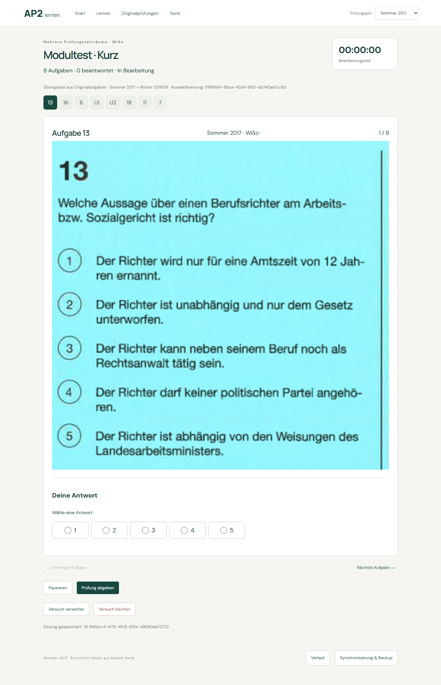
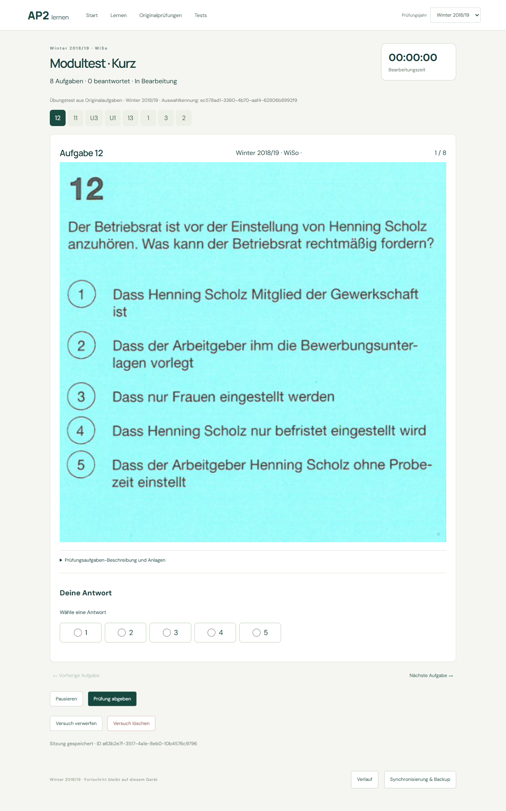
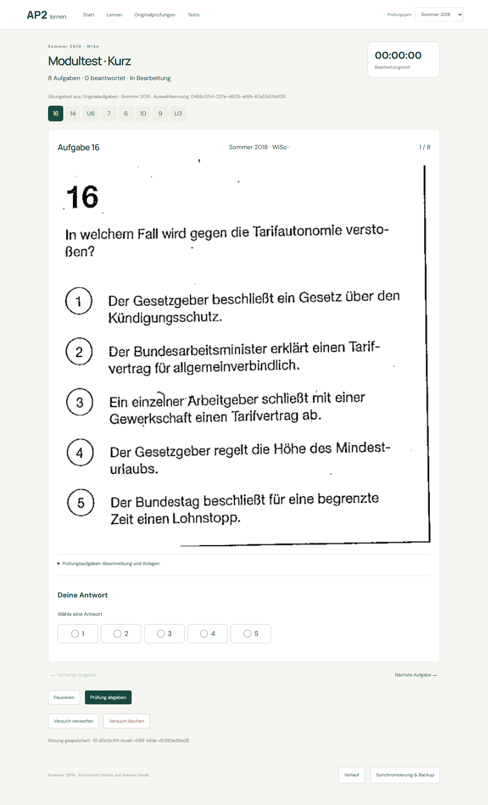
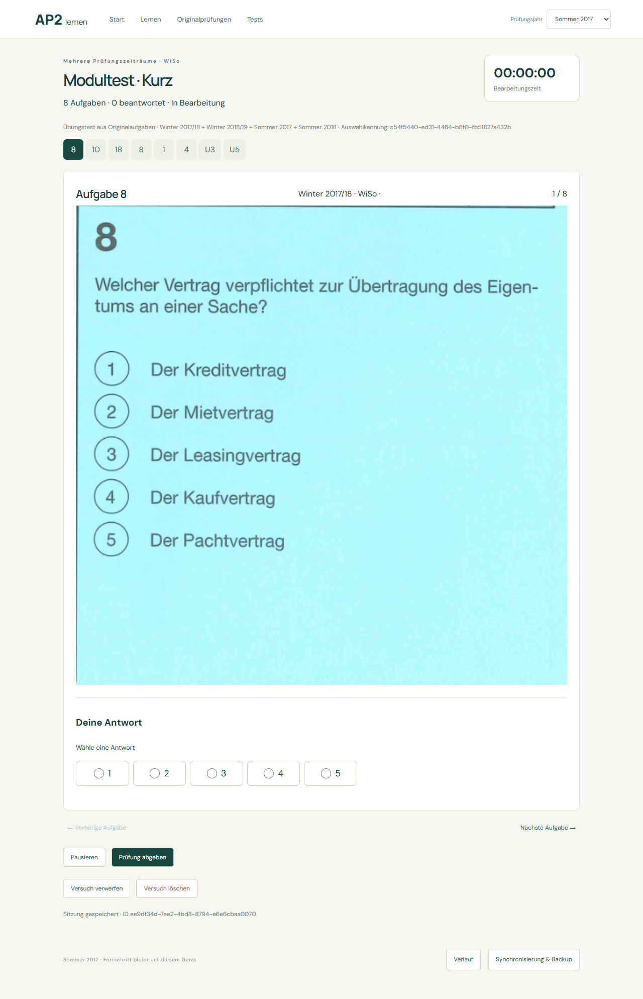
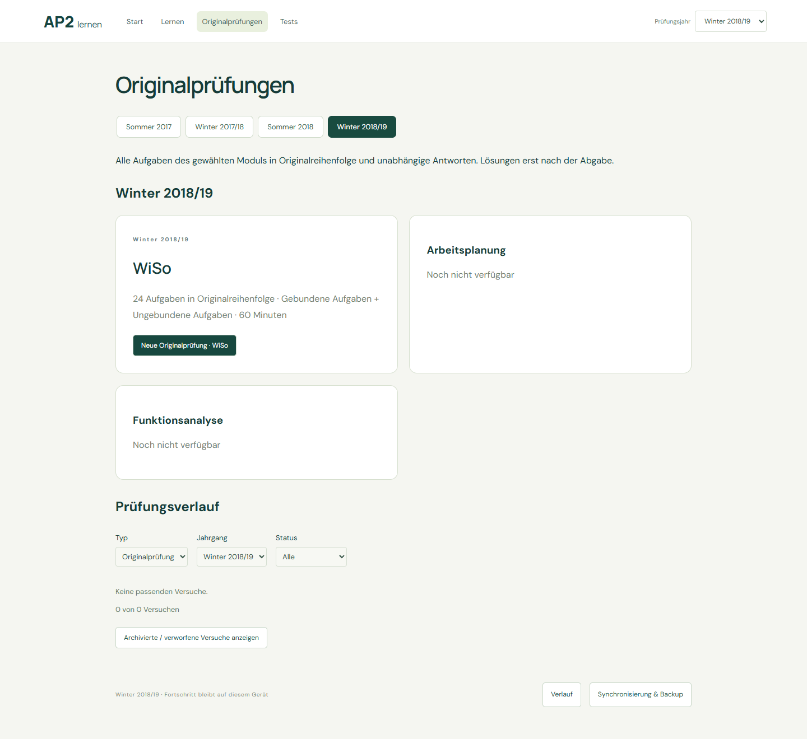
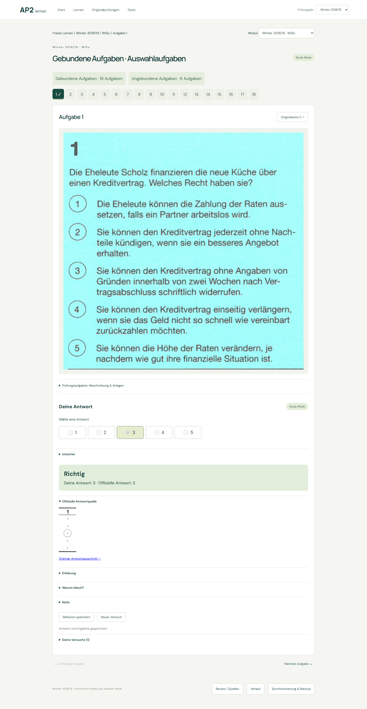
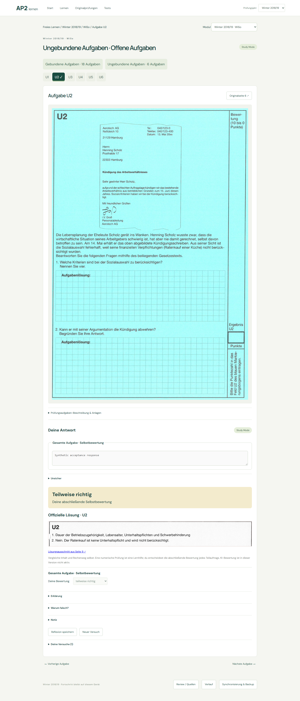

WiSo is production-ready. AP and FA are blocked by uncertain official answer marks. No later season was scanned. Firebase remains implemented but not configured.
| Module | Status | Questions | Reliable MC answers | U crops | Needs Review |
|---|---|---|---|---|---|
| Arbeitsplanung | Blocked | 36/36 | 23/28 | 8/8 | Q3, Q9, Q10, Q22, Q24 |
| Funktionsanalyse | Blocked | 36/36 | 25/28 | 8/8 | Q7, Q21, Q27 |
| WiSo | Production | 24/24 | 18/18 | 6/6 | None |
Existing portrait-explicit-regions and official-ring-grid engines reused with exact new source hashes and versioned configurations. 91 new physical pages cached once; 0 old PDF rescans. Repeated runs opened 0 PDF pages and processed 0 pages. Existing 7 modules unchanged.
WiSo U1 preserves the sideways source orientation. AP/FA U crops retain handwritten source annotations; no inferred scoring rubric.







Open production WiSo Q1 · Resume evidence · Legacy preservation